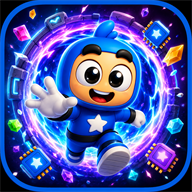
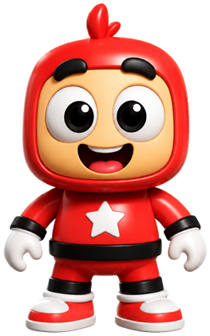
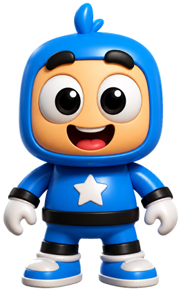
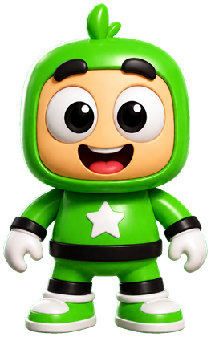
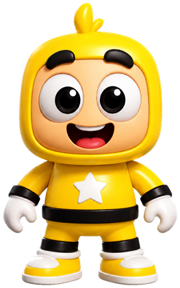

Minijuegos rápidos y caóticos para 1 a 4 jugadores en un mismo dispositivo. Diversión espacial para toda la familia.
Muy pronto en Google Play



Duelos, carreras, reflejos y pura locura cósmica. Partidas de menos de un minuto: fácil de aprender, difícil de soltar.
Todos en la misma pantalla, cada uno en su esquina. El sofá vuelve a ser la mejor arena de juego.
Torneos por rondas con tabla de posiciones para coronar al campeón de la casa.
Diseñado para niños y grandes por igual, con contenido apto para todas las edades.
IT-PRODEV es un estudio independiente de Guayaquil, Ecuador. Cosmic Bash es nuestro primer juego: nació de las tardes de juegos en familia y está hecho para compartir el teléfono, no para mirarlo solo.